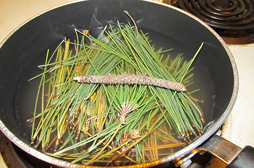

Homemade Cover Scent
Materials Needed
* The more aromatic the vegetation, the better your result will be. Evergreen materials, deciduous leaves, nuts and seeds all work well.What You'll Do
Step 1
Place your gathered vegetation in to the pot and cover with water. It's best to use as little water as possible. This will help with the concentration of your final product.

Step 2
Bring the water to a boil, and let simmer for 20-30 minutes. The longer the better, but be careful not to go too long or you'll begin to lose some of the aroma you're trying to capture.
Step 3
Strain your cover scent through your cheesecloth to remove all of the solids from your product that may clog your spray bottle. Note: To do this thoroughly, you may need to filter more than once. Once filtered, allow to cool.
Step 4
Once cool, transfer scent to your spray bottle. Label if necessary, then you're ready for the field